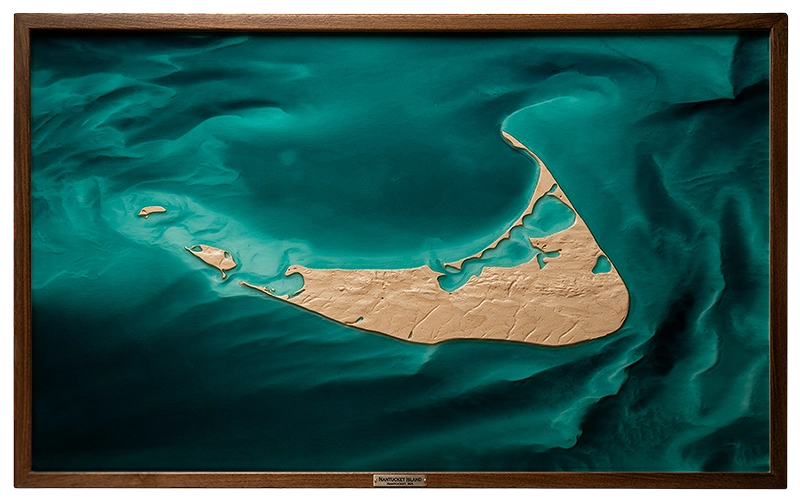

Nantucket Island
Massachusetts
Topographic and bathymetric relief of Nantucket, a low-lying island shaped by Atlantic movement. Hardwood renders the island’s subtle inland elevations and sand-formed terrain. Epoxy marks nearshore sandbars, tidal shoals, and the rotary current influencing the island’s shifting edge.

Complete topographic composition

Detail of coastal relief

Angled installation view
Nantucket required a different kind of restraint. The island sits low and subtle, shaped more by sand migration than elevation, so vertical exaggeration had to make inland relief legible without overstating the land.
The approach centered on Nantucket’s relationship with the Atlantic. Sandbars appear and dissolve, tidal channels shift, and a clockwise rotary current continues to reshape the waters around the island.
Water was treated as active process rather than boundary. Translucent resin was used to carry those nearshore conditions into the piece, giving form to the forces that shape Nantucket alongside the land itself.
— Artist's Note